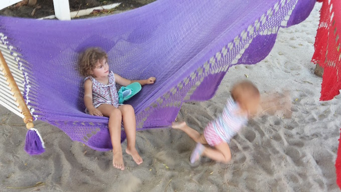

Podróż
The journey
Przejazd przez granicę Kostaryka-Nikaragua to dość egzotyczne przeżycie. Nic nie jest oczywiste, nik nic nie wie,
poza "pracownikami" przejścia granicznego, którzy wiedzą wszystko, ale uciekają na widok policji... w kilku różnych
okienkach trzeba wpłacić prawie 20$ podatków (od osoby) za wyjazd z Kostaryki i wjazd do Nikaragui.
Kontrola paszportów też odbywa się w kilku różnych miejscach, także kilka kilometrów za wyznaczoną granicą.
Ogólnie i tak udało nam się przejść bardzo sprawnie i szybko (tylko 2 godz!). Od granicy do Hacienda Iguana,
gdzie mieszkamy to też ok 2 godz jazdy autem wypożyczonym na granicy.
Passing the Costa Rica-Nicaragua border is quite an exotic experience. Nothing is obvious, no one knows what to do exactly,
however there are many helpful people who "work" at the border, they know how much and where to pay but somehow they all
run away at the sight of the police ... anyway in a few different offices we had to pay around $20 taxes (per person).
One has to pay both for leaving Costa Rica and entering Nicaragua. Passport control takes place in several
different locations, even few kilometers away from the border. In general, we were able to pass very fast (only 2 hours!)
and with no unpleasant adventures. At the border we have rented a car and went straight to Hacienda Iguana.
Nowy widok z sypialni
Our new bedroom view
Hacienda Iguana
...z prawdziwą Nikaraguą niewiele ma wspólnego. Jest to po prostu jeden z wielu zamkniętych kompleksów dla
turystów. Są tu restauracje, sklepiki i baseny "tylko dla mieszkańców", a dwie bramy wjazdowe kontrolowane
są 24/7. Ale nie możemy narzekać. Obijamy się i korzystamy ;)
Korzystamy z "klubu" na plaży i z pola golfowego, z basenu i z lekcji jogi, dzieci skaczą na trampolinie,
przsiadują w basenie i karmią kotki :)
... doesn't have much in common with the real Nicaragua. It is one of many closed complexes prepared for tourists.
There are restaurants, shops and swimming pools "for residents only", and two entry gates are controlled
24/7. But we really cannot complain. We relax and enjoy the place :) We enjoy the beach club and a the golf course,
swimming pool and yoga lessons, kids jump on the trampoline and feed the kittens :)


"Klub plażowicza" :)
The beach club


"Klub plażowicza" - strefa relaksu ;)
The beach club - relax zone
...klub wieczorem
The club in the evening


Pełnia szczęścia
Pure happiness

Pełnia szczęścia 2
Pure happiness 2


Coś dobrego...
Treats...
Nasze portfele odetchnęły trochę po Kostaryce, głównie dlatego, że zakupy w supermarkecie i
gotowanie w domu w końcu zaczęły się opłacać! Nawet jeśli do najbliższego sklepu z prawdziwego zdażenia
jedziemy autem 40 minut. W końcu też poczuliśmy, że jesteśmy blisko oceanu i świeżą rybę możemy wcinać
do woli! Kilka razy w tygodniu rybak Emmanuel przyjeżdża do Hacienda Iguana ze skrzynką pełną swieżych ryb.
Trudno się oprzeć :D
Jedną z ciekawostek w tym regionie (też w Kostaryce) są "mandarynki", skórkę mają jak limonki, w smaku
najbardziej przypominają cytryny, a kolor miąższu jest pomarańczowy (mandarynkowy?)... takie 3 w 1, nie wiadomo co :)
Czasem robimy sobie wolne od gotowania i jedziemy na obiad do Rancho Santana.
O Rancho Santana najchętniej stworzyłabym cala stronę... może kiedyś mnie do tego zatrudnią :P Tutaj mogę
wrzucić tylko kilka zdjęć, które nawet w połowie nie oddadzą uroku tego miejsca. Rancho Santana to jeden z
kompleksów (hotel, wille, basen, OGRODY, plaża i restauracja) turystycznych, ale ten akurat zrobiony jest
wyjątkowo ładnie! Poza tym jakość restauracji w 5-gwiazdkowym hotelu mamy tam w podobnej cenie (albo nawet
trochę tanej) niż w “przciętnej” kostarykańskiej knajpce…
Our wallets felt a bit relieved here, mainly because doing grocery shopping in the supermarket and cooking
at home finally pays off! Even if the nearest, reasonably supplied shop is 40 minutes away (car drive). And
we can finally feel how it is to be close to the ocean and fresh fish!
Several times a week, fisherman Emmanuel comes to Hacienda Iguana with a box full of red snappers or mackerels,
it's really hard to resist :D One of the curiosities of this region (also Costa Rica) are "tangerines",
outside green as a lime, they taste like lemons, and the color inside is orange (tangerinish?)... 3-in-1 :)
Sometimes we are too lazy to cook and choose to go for a dinner to Rancho Santana.
To describe Rancho Santana better I should probably create another website... and maybe one day I will :P Here I
can only upload few pictures, which unfortunately could never show how charming this place is. Rancho Santana
is one of the complexes (hotels, villas, pools, gardens, beach and restaurant) for tourist, but this one is
especially pretty! On the top of that, the quality of a restaurant in a 5-star hotel we have for a similar
price (or even a little cheaper) as in a "regular" Costa Rican bar...

Makrela - starczyła na 3 obiady!
Mackerel - was big enough to prepare 3 dinners!
Red snapper x 3

Zapach ryby...
Smells fishy...
Mandarynka?
Tangerine?


Rancho Santana!
Ometepe
i Granada
Po paru tygodniach odpoczynku, nadszedł czas żeby się "trochę" zmęczyć. Na celowniku znalazła się wspinaczka
na... wulkan!
W Nikaragui znajduje się kilka sporych jezior. Na Lago Nicaragua znajdują się wyspy powstałe w wyniku wybuchu
wulkanów ok. 4000 lat temu. Dwa spore wulkany wystają z wyspy Ometepe i co jakiś czas o sobie przypominają.
Lubimy ładne widoki, więc zdecydowaliśmy się wejść na wyższy - Concepción (1610 mnp). Niestety z dziećmi na
plecach można dotrzeć “tylko” do punktu widokowego na 1000 mnp, na samą górę wysłaliśmy Konrada (z przewodnikiem).
Wspinaczka na wulkan jest o tyle uciążliwa, że cała trasa pokryta jest pyłem i żwirem i łatwo się poślizgnąć,
niżej na szlaku jest sporo drzew i gałęzi, których można się złapać, powyżej 1000m są już tylko skały. Wejście
i zejście zajęło nam w sumie tylko jedyne 9 godzin, uff! Ale było warto! Nawet mimo straconego paznokcia i
tygodniowych zakwasów.
Z Ometepe wróciliśmy promem do portu w San Juan i stamtąd samochodem prosto do Granady.
Granada to niesamowite miasto, w którym czasem można natknąć się na biegając wolno ulicami “bezpańskie”...
konie, a niektóre budynki zbudowane zostały z materiałów stworzonych na bazie nawozu. Tym bardziej imponujące,
że budynki te stoją już kilkaset lat, a współcześni do tej pory nie potrafią stworzyć równie trwałych i równie
ekonomicznych cegieł.
Zabudowa w mieście jest niska, ale praktycznie każdy dom posiada patio, na niektóre można zajrzeć przed otwarte,
okratowane drzwi.
Miasto najfajniej jest oglądać w czasie przejażdżki bryczką, trasę wytyczają kościoły w mieście oraz różne miejsca,
w których “urzedował” William Walker,
postać historyczna i wróg publiczny nr 1 w Nikaragui. W sumie trudno się
dziwić jego złej sławie tam… próbował wprowadzić niewolnictwo, palił co popadnie, a na koniec mianował się
prezydentem kraju.
Z bryczki można przesiąść się na łódkę i popływać między 365 wyspami leżącymi zaraz obok Granady.
After few weeks of rest, the time came to get "a little" tired. We have decided to climbing a
volcano...!
In Nicaragua there are several bigger lakes. Some volcanic Islands are located within Lago Nicaragua and two
big volcanoes protrude from the island of Ometepe. The volcanos are still active and erupt from time to
time. We like nice views, so we decided to go for the higher one - Concepción (1610 m above sea level).
Unfortunately, with children on our backs we could reached "only" the viewpoint at 1,000 m above the sea level. We have sent
Konrad (with a guide) to the top though. Climbing the volcano is difficult mainly because the entire route is covered
with dust and gravel, and it is really easy to slip. Down the trail there is a lot of trees and branches, so you can
hold on to something, but above 1000m there are only rocks. Entry and descent took us a total of "only" nine hours, phew! But it was
worth it! Even though one nail was lost and the soreness of muscles lasted a whole week.
From Ometepe we returned to the San Juan port, and from there straight to Granada.
Granada is an amazing city, where sometimes you can come across a... stray horse walking slowly on the streets.
Some buildings were built with materials created on the basis of manure. The more impressive that after few hundred years
these buildings are still standing and despite of many attempts, people of today, are not able to create as stable and as
ecological bricks.
Buildings in the city are low, but almost every house has a patio, some of them you can see through the open, barred
door.
A carriage ride is probably the best way to visit the city. The route passes next to the city churches and different places where
William Walker,
a historical figure and public enemy No. 1 in Nicaragua, resided. It is not exactly a surprise that the man is pretty
unpopular in Nicaragua... he tried to introduce slavery, was burning things down, and finally usurped the presidency of the country.
Otherwise a nice way to spend time in Granada is to hop on a boat and take a tour between the 365 islands spread
on the lake right next to the city.
W drodze na Ometepe
On our way to Ometepe
Ptak z Ometepe (i całej Ameryki Centralnej)
A bird of Ometepe (and the whole Central America)
Widok na wulka Concepción
Concepción volcano view
Już prawie...
Almost there...

...i chwila odpoczynku po ponad 4 godzinach wspinaczki.
...a short break after over 4 hours of intense climbing.
A tymczasem Konrad wdrapał się na samą górę!
Meanwhile Konrad climbed to the top!
Ściana domu z nawozu
A wall of a house made of manure
Dom, w którym mieszkał Wiliam Walker
A house where Wiliam Walker lived

Park w centrum Granady
A park in the center of Granada
Przejażdżka bryczką po Granadzie
Carriage ride in Granada
Wycieczka na wyspy koło Granady
A trip to the islands near Granada